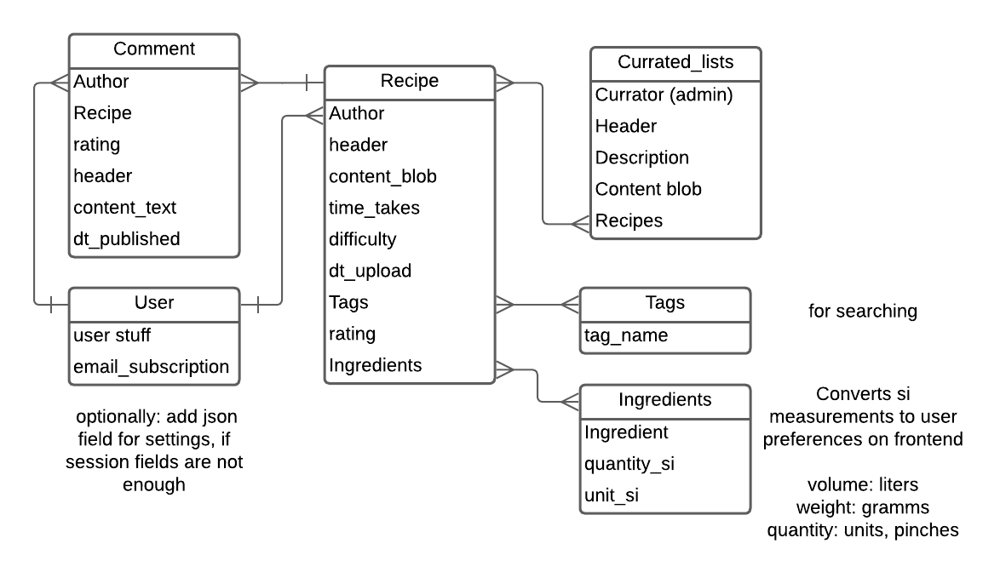

Задача¶
Реализация серверной части приложения средствами django и djangorestframework
Ход работы¶
Я выбрал вариант, над которым я работаю по дисциплинам "проектирование UI/UX" и "Фронтэнд разработка": сайт с кулинарными блогами. Я создал схему данных в нотации IDEF1X и согласовал ее с преподавателем.

Я реализовал получившуюся схему средствами DjangoORM. Далее я описал задачи, которые должен отрабатывать API для пользователя.
- Обрабатывать crud для отдельных рецептов !с аутентификацией
- Обрабатывать crud для комментариев !с аутентификацией
- Получать коллекции рецептов
Я создал следующую структуру для api.
! обозначает, что для вызова требуется токен авторизации
/recipes
/ [GET] - получить краткую информацию о последних 10 рецептах
/ ![POST] - опубликовать рецепт
/<pk> [GET] - получить полную информацию о рецепте
/<pk> ![PATCH, DELETE] - crud функционал. Доступен только для автора рецепта
/comments
/ - ошибка, нельзя запрашивать все комментарии
/?recipe_id=<pk> [GET] - получить все комментарии для конкретного рецепта
/?recipe_id=<pk> ![POST] - опубликовать комментарий для рецепта
/<pk> [GET] - получить полную информацию о комментарии
/<pk> ![PATCH, DELETE] - crud функционал. Доступен только для автора комментария
/lists
/ - получить краткую информацию о всех коллекциях рецептов
/<pk> - получить полную информацию о коллекции
/admin - админ панель
/auth - djoser аутентификация
Для реализации аутентификации я воспользовался функционалом djoser. Это помогло быстро,
безопасно и надежно создать систему аутентификации. Далее я настроил доступность api
как readonly. Я воспользовался следующими generic классами для упрощения разработки api:
ListCreateAPIView, RetrieveUpdateDestroyAPIView, ListAPIView, RetrieveAPIView
Они помогли очень быстро разграничить crud функциональность.
Для оптимизации запросов к базе данных я денормализовал данные и хранил сумму оценок и
их количество для каждого рецепта в модели данных. Для синхронизации любых изменений в
комментариях с моделью, я воспользовался функцией django: сигналами. Следующий код
следит за изменениями в моделях Comments и пересчитывает поля в рецепте
@receiver(post_save, sender=Comment)
def update_recipe_on_comment_save(sender, instance, created, **kwargs):
"""
Signal to update Recipe when a Comment is created or updated.
"""
recipe = instance.recipe
if created:
recipe.stars_sum += instance.rating
recipe.number_ratings += 1
else:
recipe.stars_sum = sum(c.rating for c in Comment.objects.filter(recipe=recipe))
recipe.save()
@receiver(post_delete, sender=Comment)
def update_recipe_on_comment_delete(sender, instance, **kwargs):
"""
Signal to update Recipe when a Comment is deleted.
"""
recipe = instance.recipe
recipe.stars_sum -= instance.rating
recipe.number_ratings = max(0, recipe.number_ratings - 1)
recipe.save()
Я объявил эти сигналы, зарегистрировал их в приложении и дальше все работало само.
Выводы¶
Таким образом я реализовал простой API средствами django, django-rest-framework и djoser.